Preguntasus es es una aplicación que permite a la comunidad estudiante, integrar sus dudas e inquietudes referente a las diversas asignaturas (organizadas en tag) cursadas en el centro de ETSII, para que puedan ser interactuadas con otros miembros de la misma, a continuación se detalla cada una de las pantallas que tanto el usuario logado o no como el administrador se podrán encontrar a lo largo de la misma
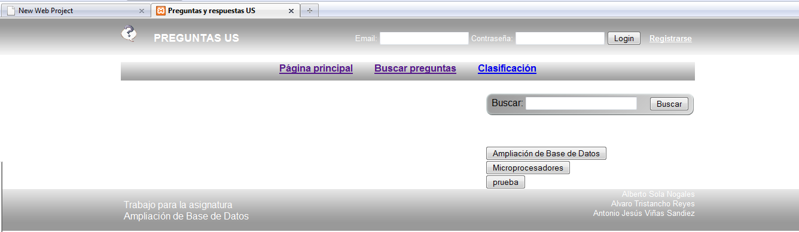
En esta Pantalla inicial, todos los usuarios tienen acceso a las diferentes preguntas planteadas asi como busquedas, nuevas preguntas. Mediante un registro inicial la aplicacion nos da la posibilidad de logeado en la misma con la idea de poder acceder aun determinado perfil de usuario normal o administrador permitiendo variar la funcionalidad de los mismos. Para cada pregunta podemos observar detalles sobre el numero de visitas de la misma, numero de respuestas asi como votaciones de los diferentes usuarios.
Los usuarios logados tienen acceso a la siguiente serie de funcionalidades: - Publicar nueva pregunta - Responder a Preguntas - Votar Respuestas y preguntas
Por su parte los usuarios con rol de administrador van a poder: - Administrar Preguntas - Administrar Respuestas - Administrar Usuarios - Administrar Tag
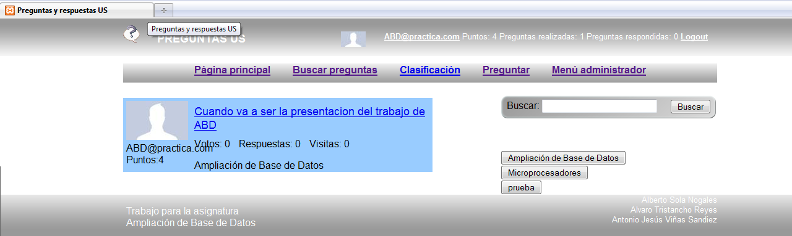
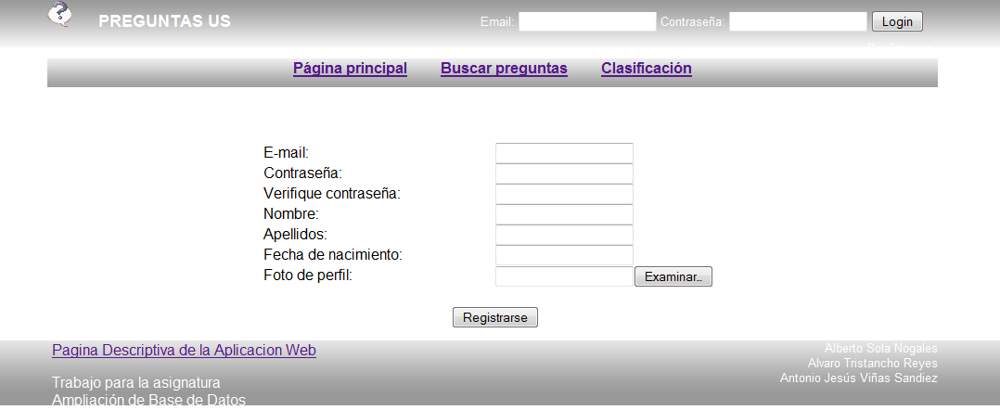
El usuario Introduce los datos datos necesarios para el alta, inclusive puede añadir una foto personal
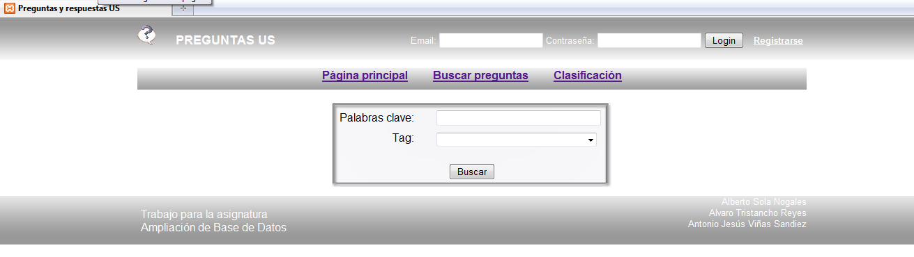
Mediante la seleccion de la correspondiente asigantura (tag) se procede a buscar la referencia a la pregunta
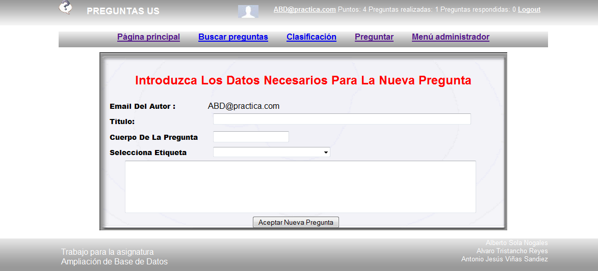
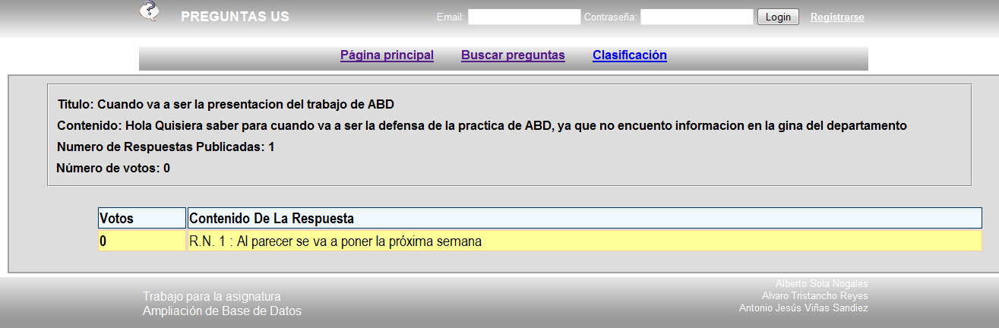
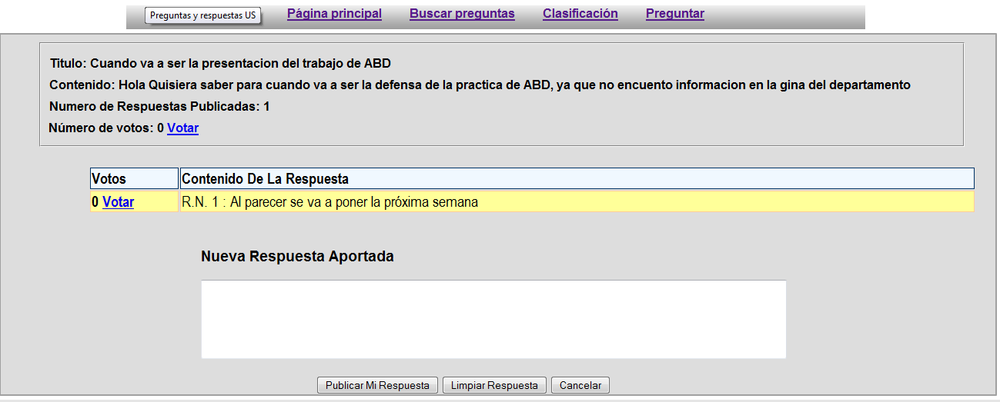
Los Usuarios Logados en el sistema tendrá como funcionalidad adicional el poder responder a las preguntas planteadas asi como votar tanto a la pregunta como la respuesta.
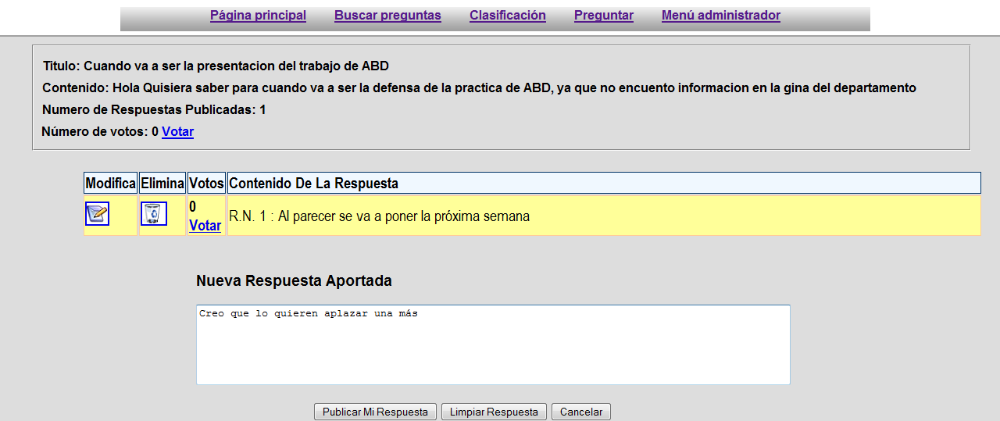
En esta seccion de la aplicacion web los usuarios logados como administrador podrán utilizar nuevas funcionalidades como modificar o borrar las respuestas emitidas por los diversos usuarios.
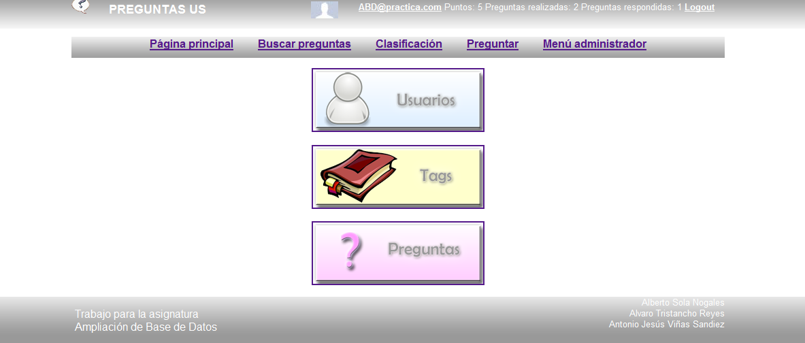
Desde esta pagina el usuario administrador podrá: - Administrar usuarios - Administrar las preguntas - Administrar Tags
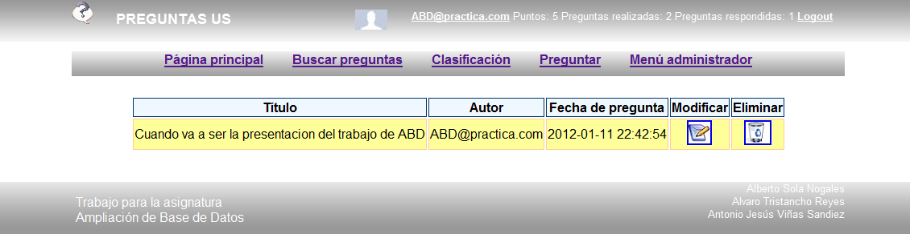
El administrador tendrá la posibilidad de modificar o eliminar Preguntas.
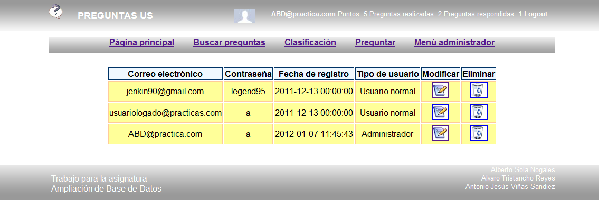
El administrador tendrá la posibilidad de modificar o eliminar Usuarios.
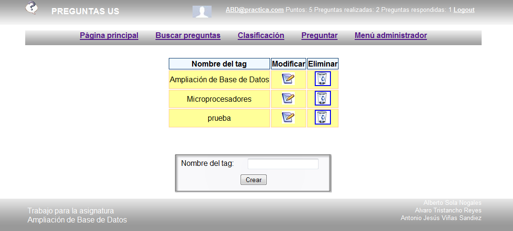
El administrador tendrá la posibilidad de modificar o eliminar Tags.